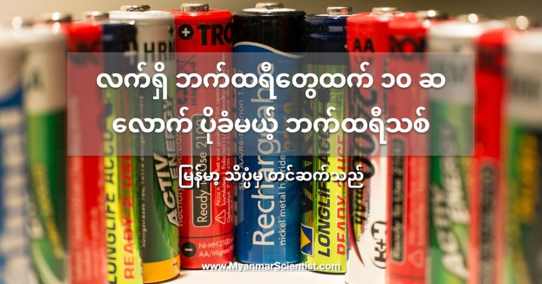

လက်ရှိအသုံးပြုနေတဲ့ လစ်သီယမ် အိုင်းယင်း (Lithiu ion) ဘက်ထရီတွေထွက် အား ၁၀ ဆလောက် ပိုသိမ်းဆည်းနိုင်မယ့် ဘက်ထရီ အသစ်ကို အမေရိကန် ပြည်ထောင်စုက အင်ဂျင်နီယာများက တီထွင်နိုင်ခဲ့ကြပါတယ်။
ဒီနည်းပညာသစ်ဟာ လက်ရှိ လျှပ်စစ်ကားတွေရဲ့ အားသွင်းဖို့ ကြာချိန်ကိုရော သွားနိုင်တဲ့ အကွာအဝေးကိုရော ကြီးမားတဲ့အကျိုးသက်ရောက်မှုတွေ ဖြစ်လာစေမယ်လို့ ဆိုပါတယ်။
အမေရိကန် ပြည်ထောင်စု စန်ဒီယေဂို ကာလီဖိုးနီးယား တက္ကသိုလ် (University of California San Diego) က နာနို အင်ဂျင်နီယာတွေက ဒီဘက်ထရီကို တီထွင်ခဲ့တာ ဖြစ်ပါတယ်။
တီထွင်တယ် ဆိုရာမှာလဲ ဘာမှ ကြီးကြီးမားမား ပြုလုပ်ခဲ့တာတော့ မဟုတ်ပါဘူးတဲ့။ သူတို့ လုပ်ခဲ့တာက လက်ရှိ လစ်သီယမ် ဘက်ထရီတွေရဲ့ အတွင်းမှာ ရှိတဲ့ အမငုတ်အဖြစ် အသုံးပြုတဲ့ ပစ္စည်းကို အခြား ပစ္စည်းတမျိုးနဲ့ ပြောင်းလဲလိုက်တာပဲ ဖြစ်ပါတယ်။
ဒီ လစ်သီယမ် အိုင်းယင်း ဘက်ထရီတွေကို စမတ်ဖုန်းတွေက စလို့ လက်တော့ပ်တွေ အလယ် အာကာသယာဉ်တွေ အဆုံး ကျယ်ကျယ်ပြန့်ပြန့် အသုံးပြုနေကြတာပါ။ (ဟုတ်ပါတယ်၊ အခုဖုန်းထဲက ဘက်ထရီက ဒီ လစ်သီယမ် အိုင်းယင်း ဘက်ထရီပါပဲ)။ ဘက်ထရီတွေမှာ အဖိုနဲ့ အမ ဆိုပြီး နှစ်ငုတ် ပါပါတယ်။ အပေါင်း လက္ခဏာနဲ့ ပြထားတဲ့ဖက်က အဖိုဖက် ဖြစ်ပြီး အနှုတ်လက္ခဏာ ပြထားတဲ့ဖက်က အမဖက်ပါ။
လစ်သီယမ် အိုင်းယင်း ဘက်ထရီတွေရဲ့ ဒီ အမငုတ် ထွက်လာတဲ့ ဘက်ကအခန်းမှာ ဂရပ်ဖိုက် (Graphite) ကို အစဉ်အလာ သုံးစွဲလေ့ ရှိပါတယ် (ဂရပ်ဖိုက် ဆိုတာ ခဲဆံလုပ်တဲ့ ခဲသားပါပဲ)။ ဒီဂရပ်ဖိုက် အစား စီလီကွန် (Silicon) ကို အသုံးပြုရင် စွမ်းအင်သိုလှောင်နိုင်စွမ်း ၁၀ ဆလောက် ပိုများတယ် ဆိုတာကို ပညာရှင်တွေ သိခဲ့ကြတာ ကြာပါပြီ။
ဒါပေမယ့် စီလီကွန်က ပြဿနာ ရှိပါတယ်။ ဒီ စီလီကွန်က ဓါတ်အားဝင်လာရင် ဖေါင်းပွလာပြီး ဓါတ်အားပြန်ထွက်သွားရင် ပိန်ရှုံ့သွားတာပဲ ဖြစ်ပါတယ်။ အဲ့သည်တော့ ဒီစီလီကွန်ကို သာမန်ရောင်းတမ်း ဘက်ထရီတွေမှာ ထည့်သွင်းအသုံးပြုဖို့က အန္တရာယ် များလွန်းနေပါတယ်။
စီလီကွန်ကို အမငုတ် နေရာမှာ အသုံးပြုတဲ့အခါ နောက်ပြဿနာ တစ်ခုလဲ ရှိပါသေးတယ်။ အဲ့တာကတော့ လက်ရှိ လစ်သီယမ် ဘက်ထရီတွေမှာ သုံးနေတဲ့ လျှပ်ကူးရည် (Electrolyte)က ဒီအမငုတ်က စီလီကွန်နဲ့ ဓါတ်ပြုတာပဲ ဖြစ်ပါတယ်။ ဒီဓါတ်ပြုမှုကြောင့် ဒီလျှပ်ကူးရည် ရဲ့ သက်တမ်းက ခနလေးနဲ့ ကုန်သွားပါတယ်။ လျပ်ကူးရည် မရှိတော့ရင် ဘက်ထရီလဲ အလုပ်မလုပ်နိုင်တော့ပါဘူး။
ဒီပြဿနာကို ဖြေရှင်းဖို့ ကာလီဖိုးနီးယား တက္ကသိုလ်က အင်ဂျင်နီယာတွေက လျှပ်စစ်ဓါတ်ကူးရည် အစား လျှပ်စစ်ဓါတ်ကူးပစ္စည်း အခဲနဲ့ အစားထိုးပြီး စမ်းသပ်ခဲ့ကြပါတယ်။
ပထမဆုံး သာမန် လစ်သီယမ် ဘက်ထရီရဲ့ အမငုတ်က ဂရပ်ဖိုက်အစား စီလီကွန် နဲ့ အစားထိုးလိုက်ပါတယ်။ ပြီးတော့ ပုံမှန် လျှပ်ကူးရည်အစား ဆာလ်ဖိုဒ် (Sulphide) ကို အခြေခံတဲ့ လျှပ်ကူးအခဲနဲ့ အစားထိုးလိုက်ပါတယ်။ ရလာတဲ့ ဘက်ထရီကတော့ သာမန် လစ်သီယမ် ဘက်ထရီတွေထက် ပိုပြီး အားပိုသိမ်းနိုင်တဲ့ ဘက်ထရီ ရလာတာပဲ ဖြစ်ပါတယ်။
အခု ဘက်ထရီကို စမ်းသပ်ကြည့်ရာမှာ အကြိမ် ၅၀၀ ပြည့်အောင် အားသွင်းတာတောင်မှ ဘက်ထရီရဲ့ စွမ်းအား ၈၀% အကောင်းကျန်နေသေးတာကို တွေ့ကြရပါတယ်။ ဒါဟာ သာမန် လစ်သီယမ် ဘက်ထရီတွေထက် ပိုသာတဲ့ စွမ်းဆောင်နိုင်မှုပဲ ဖြစ်ပါတယ်။
ကာလီဖိုးနီးယား တက္ကသိုလ်က အင်ဂျင်နီယာတွေက သူတို့ရဲ့ တီထွင်မှုကို Science နည်းပညာ သုတေသန ဂျာနယ်ကြီးထဲမှာ ဖေါ်ပြထားပါတယ်။
References:
Battery breakthrough surprises scientists with enormous potential | Independent
New all-solid-state battery holds promise for grid storage and EVs | New Atlas
လက်ရှိ ဘက်ထရီတွေထက် ၁၀ ဆလောက် ပိုခံနိုင်မယ့် ဘက်ထရီသစ် တီထွင်အောင်မြင်

September 28, 2021
Other Posts
- မစ်ကီးဝေး ဗဟိုက ထူးဆန်းတဲ့ ကြိုးမျှင်များ
- အင်္ဂါဂြိုဟ် ပေါ်က တံခါးပေါက်ကြီး
- အလင်းနှစ် ဆိုတာ ဘာလဲ
- တရုတ်ထက် ဦးအောင် လပေါ်မှာ သတ္တုတူးဖို့ နာဆာ ကြိုးပမ်းနေ
- အစ္စရေး နိုင်ငံထုတ် စစ်မြေပြင်သုံး တိုက်ခိုက်ရေး စက်ရုပ်
- Zumwalt Class ကိုယ်ပျောက် စစ်သင်္ဘော
- သက်ရှိထင်ရှား ရှိနေသေးတဲ့ ကမ္ဘာ့ရှေးအကျဆုံး သတ္တဝါ ရှာတွေ့
- James Webb တယ်လီစကုပ်ကြီးရဲ့ ကြည်လင်ပြတ်သားသော ပုံရိပ် နာဆာထုတ်ပြန်
- မိခင်အတွက် Stem Cells လှူတဲ့ သန္ဓေသားငယ်
- လထဲမှာ ဘာရှိလဲ ဖော်ထုတ်နိုင်ပြီ